MANUAL DE UTILIZAÇÃO DO USUÁRIO – SGACERVO
Conteúdo
1. Começar a utilização do sistema.
2.1. Sair/ Deslogar do sistema.
2.2. Editar Informações do seu usuário.
5.2. Cadastrar Imagem de Item..
1. Começar a utilização do sistema.
Após a instalação, inicialize o programa, a primeira tela é a de autenticaçao ou login, como mostrada abaixo:
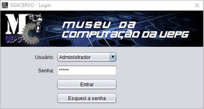
Na opção Usuário selecione o seu respectivo usuario que já foi cadastrado previamente pelo administrandor do sistema, insira a senha e clique no botao Entrar para acessar o as intefaces de trabalho de programa.
Caso não esteja cadastrado ou tenha esquecido a sua senha contate o administrador do sistema, essa é a mensagem do botao Esqueci a senha.
Para sair clique no X no canto superior direito .
2. Usuário
2.1. Sair/ Deslogar do sistema.
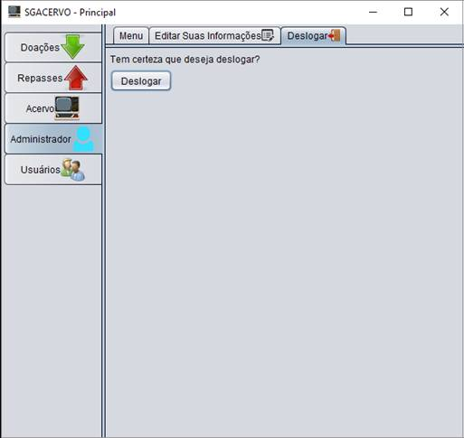
Uma vez autenticado e já nas interfaces de trabalho do sistema
para sair/deslogar clique na aba com seu nome de usuario no menu de abas a
esquerda e clique no botao deslogar que te levará a aba deslogar para confirmar
essa opção, então clique no botao deslogar e assim voltará a tela inicial de
autenticação
2.2. Editar Informações do seu usuário.
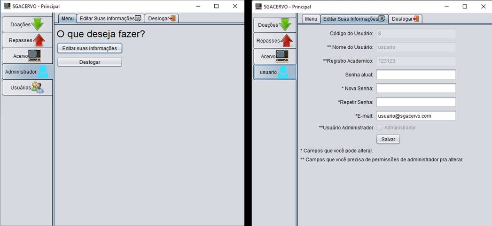
Uma vez autenticado e já nas interfaces de trabalho do sistema clique na aba com o seu nome no menu de abas na esquerda e então no botão Editar suas Informações que te levará a aba Editar Suas Informações onde visulizar todas suas informações e poderá alterar sua senha e email
3. Gerenciar Doações
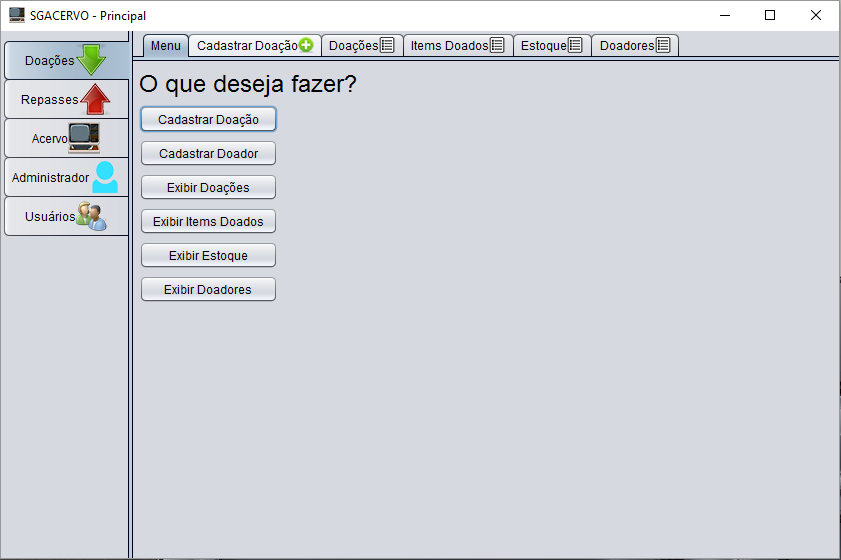
Sob a aba Doações no meu de abas da esquerda estão todas as opçoes referentes as doacões que podem ser acessadas atraves dos botoes ou pelas abas .
3.1. Cadastrar Doação
| 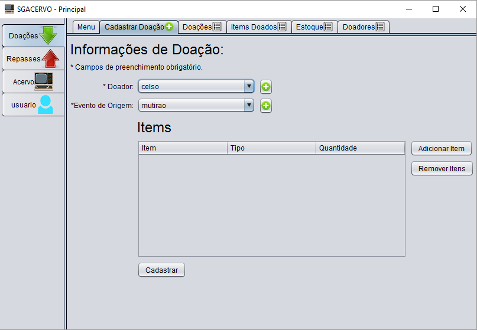 |
Para cadastrar uma doação selecione o doador e o evento de origem nos respectivos campos, caso o doador ou evento de origem desejados não estejam previamente cadastrados clique no botao + ao lado dos campos para cadastrar.
Então adicione os itens desejados clicando no botão Adicionar Item, caso o item desejado não estejam previamente cadastrados clique no botao + ao lado dos campos para cadastrar. Se quiser remover item escolhido, selecione a linha do item e clique em remover.
Após todos os itens desejados inseridos clique em cadastrar para efetuar o cadastro.
3.1.1. Cadastrar Doador
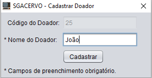
Clique no botão cadastrar doador entao preencha o campo Nome do Doador e clique no botao cadastrar para efetuar o cadastro.
3.1.2. Adicionar Item
| 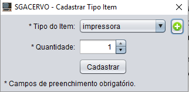 |
Clique em Adicionar Item na aba Cadastrar Doação Selecione o tipo do item e escolha a quantidade então clique no botao cadastrar para efetuar o cadastro. Caso tipo do item desejado não esteja cadastrado clique no + para cadastrar.
3.2. Exibir Doações
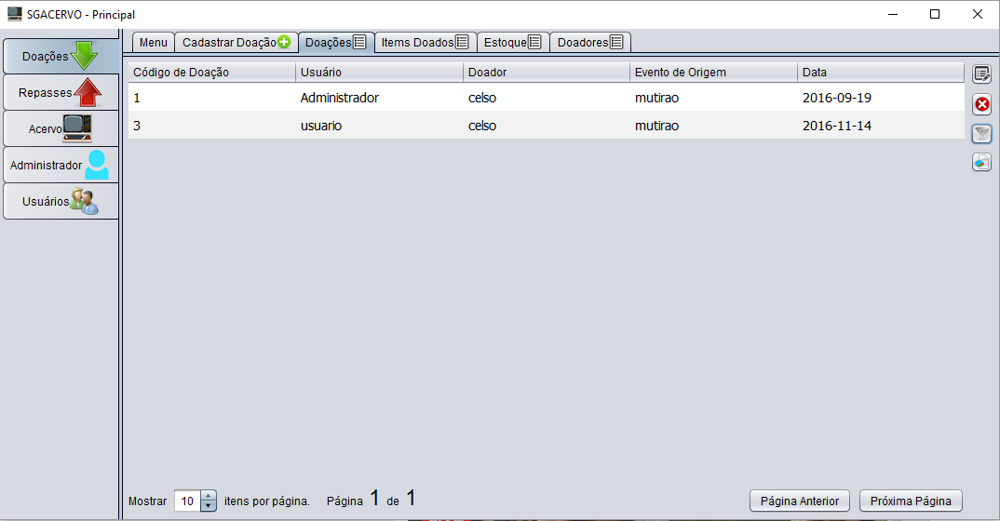
Todas as Doaçoes cadastradas estão listadas. Para alterar alguma doação selecione a sua linha e clique no primeiro icone a direita.
Para remover alguma doação selecione a sua linha e clique no segundo icone a direita.
Para filtrar as doaçoes listadas clique no terceiro icone a direita.
No rodapé da pagina encontram-se opções de visualização da lista de item assim como navegação entre paginas.
3.2.1. Alterar Doação
| 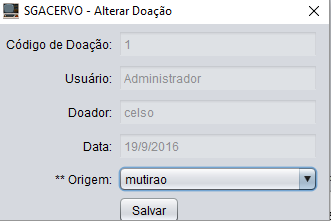 |
A opção que pode ser alterada é a origem, para isso selecione a nova origem e clique salvar.
3.2.2. Filtar Doação
| 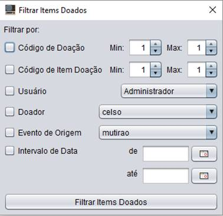 |
Para filtrar a lista de doações, preencha as opções mostradas a cima. Os campos de intervalo de data são preenchidos clicando nos botões ao lado que abriram um calendario para selecionar a data desejada.
3.2.3. Gerar Relatório
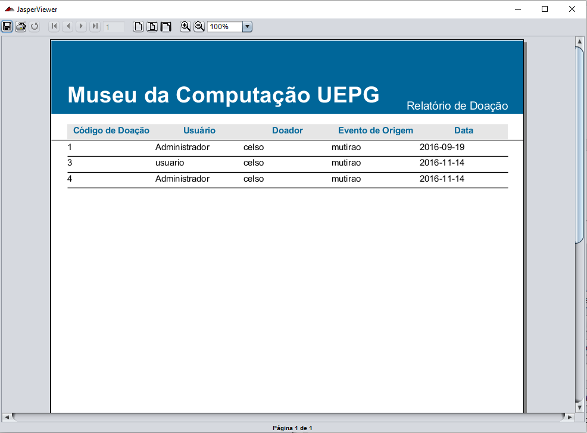
Para gerar um relatório da lista apresentada clique no quarto ícone no lado direito da tela, abrira entao uma Janela com opçoes para salvar, imprimir e visualizar o relatorio
3.3. Exibir Itens Doados
| 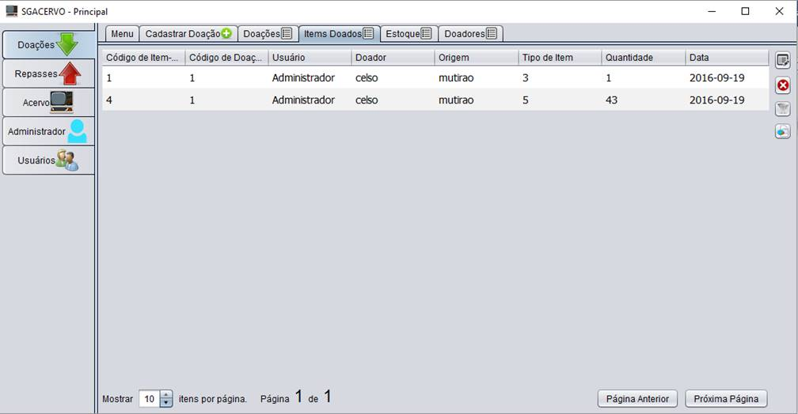 |
Todos os itens doados estão listados. Para alterar algum item doado selecione a sua linha e clique no primeiro icone a direita.
Para remover algum item doado selecione a sua linha e clique no segundo icone a direita.
Para filtrar os itens doados listados clique no terceiro icone a direita.
No rodapé da pagina encontram-se opções de visualização da lista de itens doados assim como navegação entre paginas.
Todas essas opções funcionam da mesma maneira que na aba Doações
3.4. Exibir Estoque
| 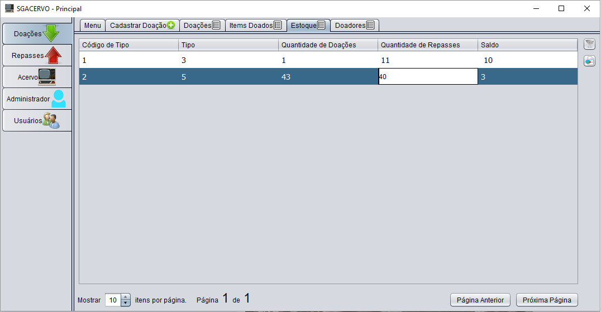 |
Todos os itens do estoque estão listados. Para alterar algum item do estoque selecione a sua linha e clique no primeiro icone a direita.
Para remover algum item do estoque selecione a sua linha e clique no segundo icone a direita.
Para filtrar os itens do estoque listados clique no terceiro icone a direita.
No rodapé da pagina encontram-se opções de visualização da lista de item assim como navegação entre paginas.
Todas essas opções funcionam da mesma maneira que na aba Doações
3.5. Exibir Doadores
| 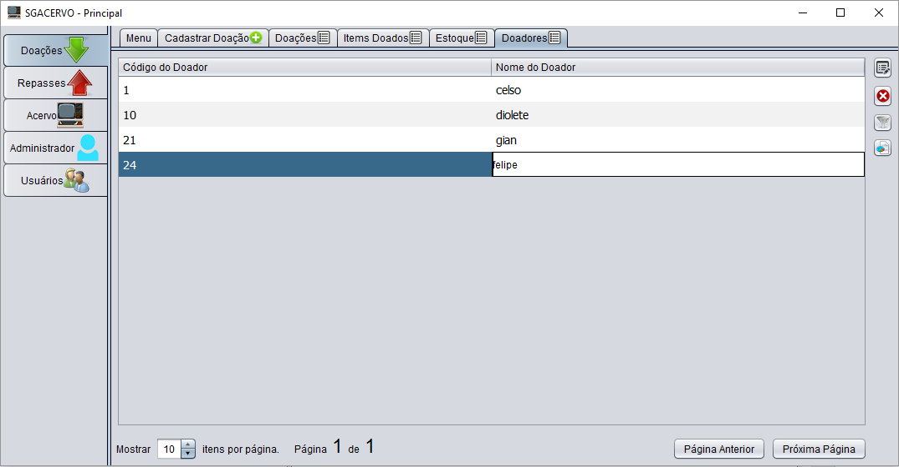 |
Todos os doadores estão listados. Para alterar algum doador selecione a sua linha e clique no primeiro icone a direita.
Para remover algum item do estoque selecione a sua linha e clique no segundo icone a direita.
Para filtrar os doador listados clique no terceiro icone a direita.
No rodapé da pagina encontram-se opções de visualização da lista de doadores assim como navegação entre paginas.
Todas essas opções funcionam da mesma maneira que na aba Doações.
4. Gerenciar Repasses
| 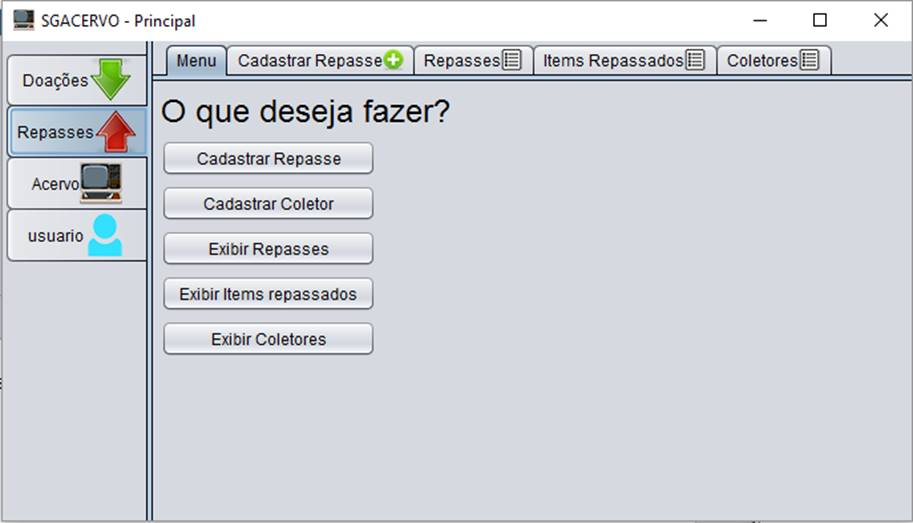 |
Sob a aba Repasses no meu de abas da esquerda estão todas as opções referentes as doacões que podem ser acessadas atraves dos botoes ou pelas abas.
4.1. Cadastrar Repasse
| 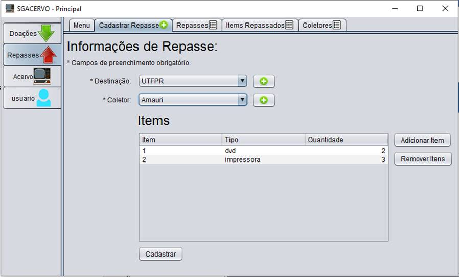 |
Para cadastrar um repasse selecione a destinação e o coletor nos respectivos campos, caso a destinação ou o coletor desejados não estejam previamente cadastrados clique no botao + ao lado dos campos para cadastrar.
Então adicione os itens desejados clicando no botão Adicionar Item, caso o item desejado não estejam previamente cadastrados clique no botao + ao lado dos campos para cadastrar. Se quiser remover item escolhido, selecione a linha do item e clique em remover.
Após todos os itens desejados inseridos clique em cadastrar para efetuar o cadastro.
4.1.1. Cadastrar Destinaçao
| 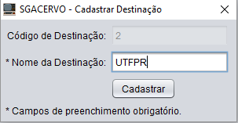 |
Para cadastrar destinação insira o nome do local de destinação e clique em Cadastrar para efetuar o cadastro
4.1.2. Cadastrar Coletor
| 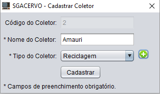 |
Para cadastrar um coletor insira o nome e escolha o tipo de coletor, caso o tipo não esteja previamente cadastrado clique no botão + e cadastre o tipo de coletor desejado, então clique em no botão Cadastrar para finalizar.
4.2. Exibir Repasses
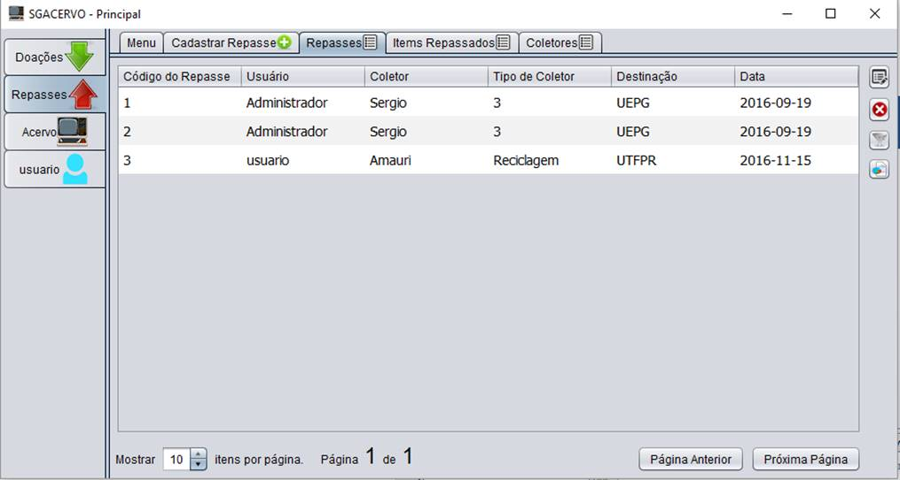
Todos os repasses estão listados. Para alterar algum repasse selecione a sua linha e clique no primeiro icone a direita.
Para remover algum repasse selecione a sua linha e clique no segundo icone a direita.
Para filtrar os repasses listados clique no terceiro icone a direita.
No rodapé da pagina encontram-se opções de visualização da lista de repasses assim como navegação entre paginas.
Todas essas opções funcionam da mesma maneira que na aba Doações citados no item Gerenciar Doações.
4.3. Exibir Itens Repassados
| 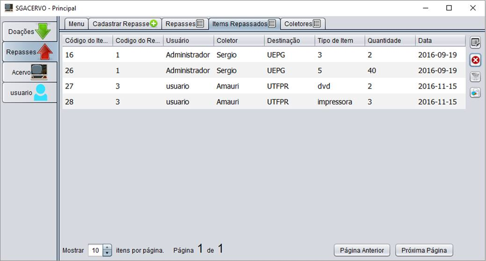 |
Todos os itens repassados estão listados. Para alterar algum item repassado selecione a sua linha e clique no primeiro icone a direita.
Para remover algum item repassado selecione a sua linha e clique no segundo icone a direita.
Para filtrar os itens repassados listados clique no terceiro icone a direita.
No rodapé da pagina encontram-se opções de visualização da lista de item assim como navegação entre paginas.
Todas essas opções funcionam da mesma maneira que na aba Doações como citados no item Gerenciar Doações.
4.4. Exbir Coletrores
| 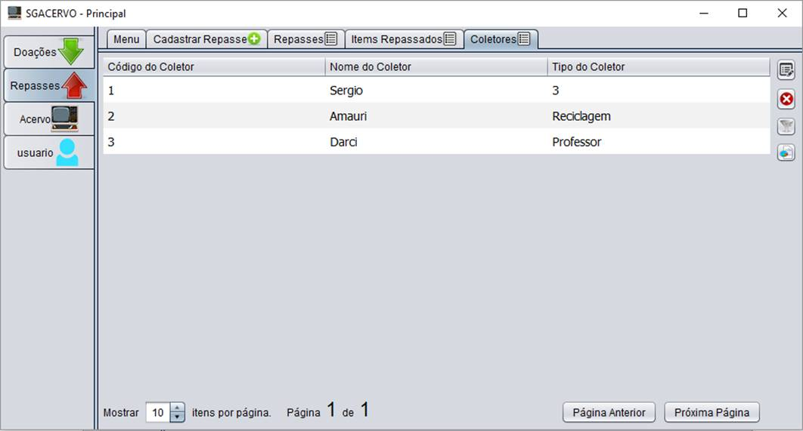 |
Todos os coletores estão listados. Para alterar algum coletor selecione a sua linha e clique no primeiro icone a direita.
Para remover algum coletor selecione a sua linha e clique no segundo icone a direita.
Para filtrar os coletores listados clique no terceiro icone a direita.
No rodapé da pagina encontram-se opções de visualização da lista de item assim como navegação entre paginas.
Todas essas opções funcionam da mesma maneira que na aba Doações como citados no item Gerenciar Doações.
5. Gerenciar Acervo
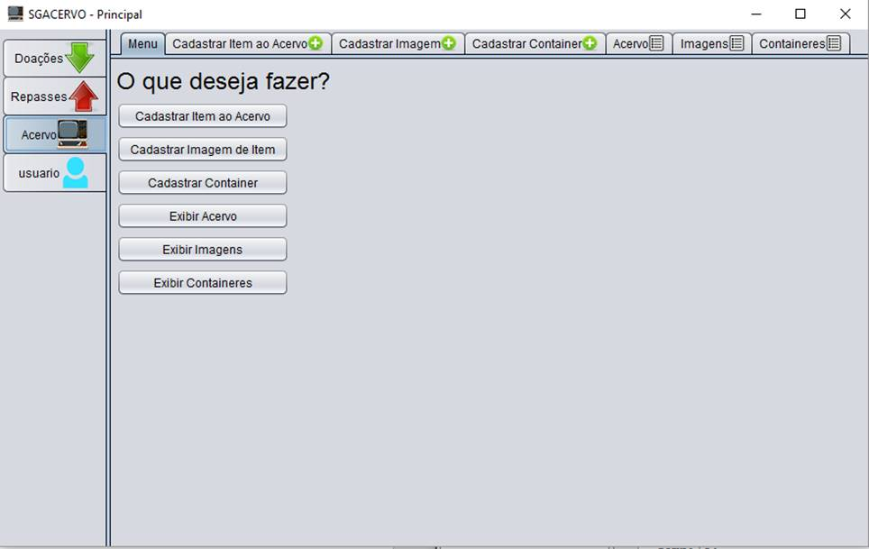
Sob a aba Acervo no meu de abas da esquerda estão todas as opçoes referentes ao acervo que podem ser acessadas atraves dos botoes ou pelas abas .
5.1. Cadastrar Item ao Acervo
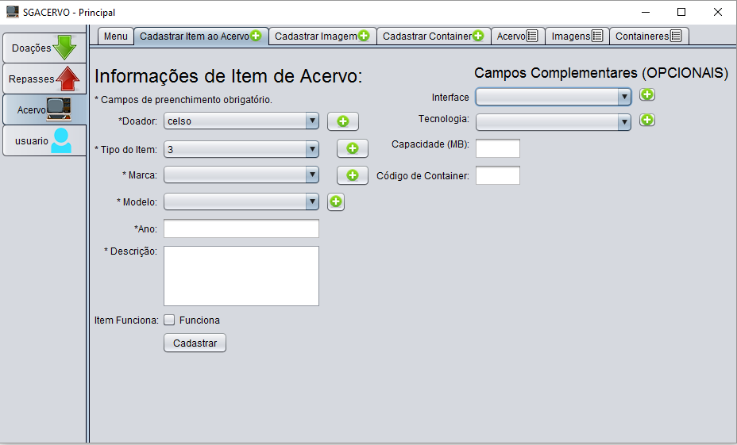
Para cadastrar um item ao acervo ao menos selecione doador, tipo do item, marca e modelo nos respectivos campos, caso a não estejam previamente cadastrados clique no botao + ao lado dos campos para cadastrar, além disso insira o ano de fabricação e uma breve descrição do item alem de marcar se o item funciona.
Existem ainda campos opcionais sendo eles interface, tecnologia, capacidade que podem ser preenchidos caso o item possua tais informações. Já o campo Codigo de Container deve ser preenchido se o item está em exposição em algum container.
5.2. Cadastrar Imagem de Item
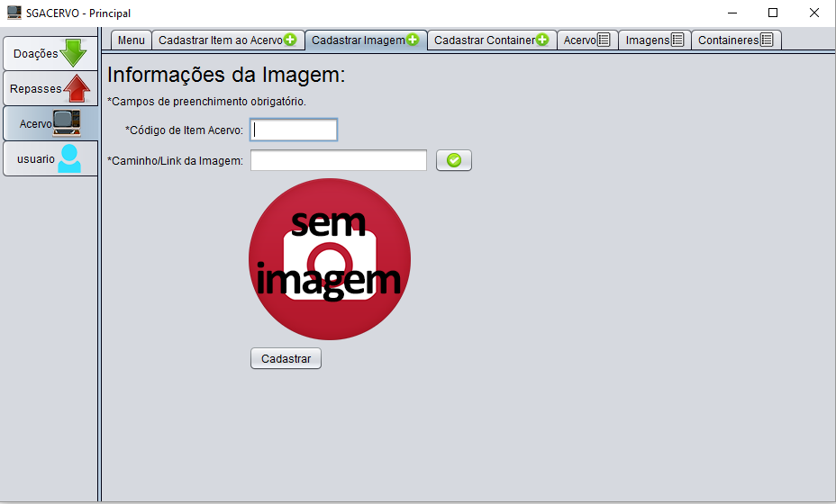
Esse é um complemento do cadastro de um item ao acervo, preencha o codigo do item de acervo e o link para a sua imagem e clique cadastrar para efetuar o cadastro.
5.3. Cadastrar Container
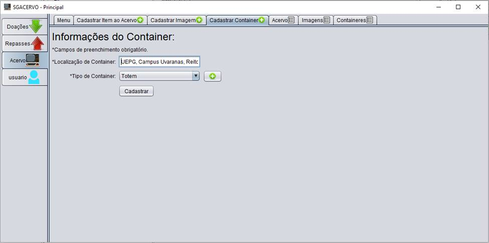
Para cadastrar ou container insira a localização de forma mais especifica possivel, ex: UEPG, Campus Uvaranas, Bloco L, segundo andar. Além disso selecione o tipo de container, caso o tipo não esteja previamente cadastrado clique no botao + para cadastrar.
5.4. 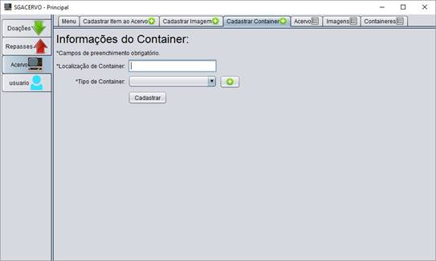
Exibir Acervo

Todos os itens de acervo estão listados. Para alterar algum item de acervo selecione a sua linha e clique no primeiro icone a direita.
Para remover algum item de acervo selecione a sua linha e clique no segundo icone a direita.
Para filtrar os itens de acervo listados clique no terceiro icone a direita.
No rodapé da pagina encontram-se opções de visualização da lista de itens do acervo assim como navegação entre paginas.
Todas essas opções funcionam da mesma maneira que na aba Doações como citados no item Gerenciar Doações.
5.5. Exibir Imagens
 |
Todos as imagens dos itens de acervo estão listados. Para alterar alguma imagem dos itens de acervo selecione a sua linha e clique no primeiro icone a direita.
Para remover alguma imagem item de acervo selecione a sua linha e clique no segundo icone a direita.
Para filtrar as imagens dos itens de acervo listados clique no terceiro icone a direita.
No rodapé da pagina encontram-se opções de visualização da lista de imagens dos itens do acervo assim como navegação entre paginas.
Todas essas opções funcionam da mesma maneira que na aba Doações como citados no item Gerenciar Doações.
5.6. Exibir Containeres
| 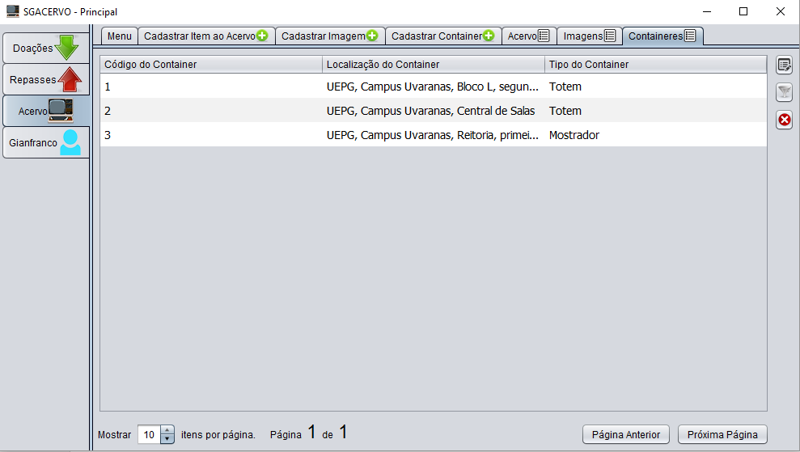 |
Todos os containers estão listados. Para alterar algum container selecione a sua linha e clique no primeiro icone a direita.
Para remover algum container selecione a sua linha e clique no segundo icone a direita.
Para filtrar os containers listados clique no terceiro icone a direita.
No rodapé da pagina encontram-se opções de visualização da lista de container assim como navegação entre paginas.
Todas essas opções funcionam da mesma maneira que na aba Doações como citados no item Gerenciar Doações.